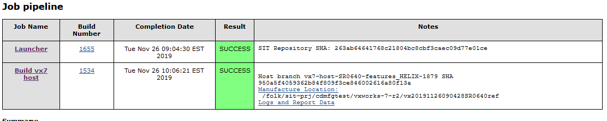
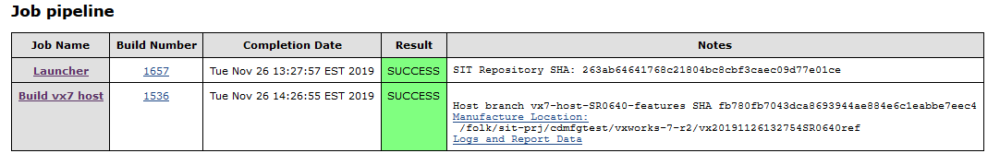

Submitting Code in VxWorks 7 Host Tool Branch¶
THIS PAGE IS CURRENTLY SERVING AS A PLACEHOLDER. IN PROGRESS for updates.
Purpose: The objective of this document is to capture the process to submit code to Host side branch. For each VxWorks release the host side branch is created using this naming convention: vx7-host-<release>-features. e.g. for SR0640 release, the branch name is: vx7-host-SR0640-features.
(Source: https://jive.windriver.com/docs/DOC-81128)
Create Pull Request and manually start a build¶
Checkout your branch of Vx7-host-<release>-features
Update your branch with feature/Epic work or bug fixes and push the code to remote branch
Create a pull request: Host Side Pull Request
{kind=link}
Make sure to add the description and include the following:
Epic/Story or defect link
Code review link
Test steps (if applicable)
Start the build manually by using Vx7 Host Launcher (make sure to login first) and select “Build with Parameters”
Update the “VX7_HOST_BRANCH” to add your branch name (and leave the rest as is).
{kind=link}
Scroll down to select “Build” button
Note: This job will take approximately 1 hour to complete

The summary table will identify the location of the hostref. You can test your new hostref by installing it into your git repo:
setup-tools -installer /folk/sit-prj/cdmfgtest/vxworks-7-r2/vx20191126090428SR0640ref.
Build and Config team will review and merge the pull request and start the process to generate the new hostref to make it available to others.
Making the Hostref Available to Others¶
After merging designers branch into vx7-host-<release>-features branch (vx7-host-SR0640-features), start another manual build to make sure all the other commits are included into the hostref (see step 5 above)

Test the new hostref using step (see step 8 above), then you can make it available to all R1 sites using the Jenkins job. It will take a few hours to propagate to all sites.
Once it is available on R1, you can make it the default hostref for your vxworks repo by adding it to the .hostref file in your branch
git checkout your_vxworks_branch
cd vxworks
vi .hostref and edit the last line in the file to replace the hostref and the SHA
for example, replace the last line with (the bottom of the file): vx20191126132754SR0640ref #fb780fb7043dca8693944ae884e6c1eabbe7eec4
diff --git a/.hostref b/.hostref
index c9e3878..dcc2bee 100644
--- a/.hostref
+++ b/.hostref
@@ -9,4 +9,4 @@ vx20190312_SR0610ref #8e305c283c75b620e257b63c1bc71df5f4cb6bd6
vx20190712182250SR0620ref #ba09589862a44720dc5a43f040e22480317966fc
vx20191105220923SR0630ref #487c11f6fa89dfe153f6652fe23b65f788d32521
vx20191115141809SR0631ref #07206b052f8ca40d7775f7c7388bdfb40ede44e1
-vx20191119171720SR0640ref #3a77cb8abe81ded2b8fa8733838ce1eb84fff479
+vx20191126132754SR0640ref #fb780fb7043dca8693944ae884e6c1eabbe7eec4
Create code review make sure to include B&C team (for SR0640, VXW7-4441 is used to submit/integrate the hostref into vx7-integration.
Note: make sure to assign the defect to you and set the status to: ” In progress” . A new defect will be created for new release check with B&C for the defect number
Use the CI pipeline to integrate your branch into vx7-integration branch
When this is committed and pushed using CI pipeline, anyone using your branch will install your VxWorks host tools. If you make further changes to your host tools, this entire procedure must be redone.
NOTE: The B&C team have been performing this step, but there is nothing preventing the designer from performing this step themselves.